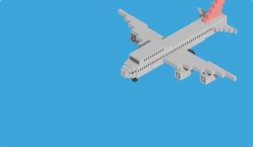
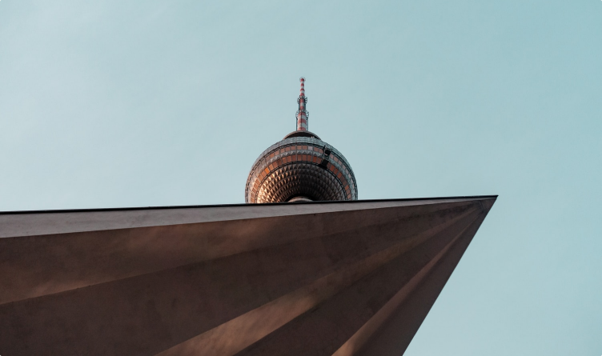
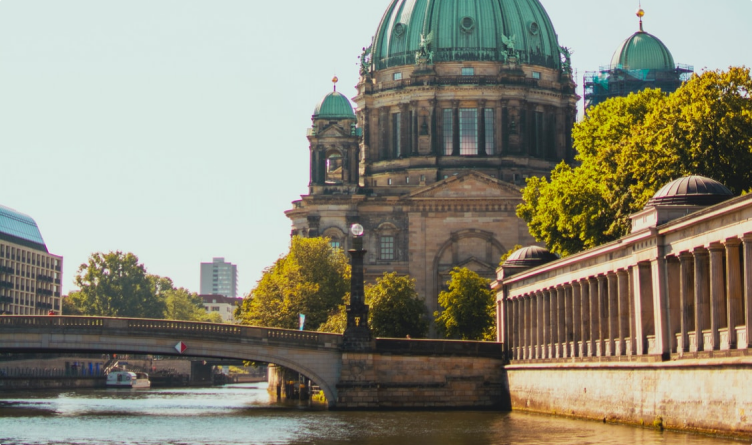
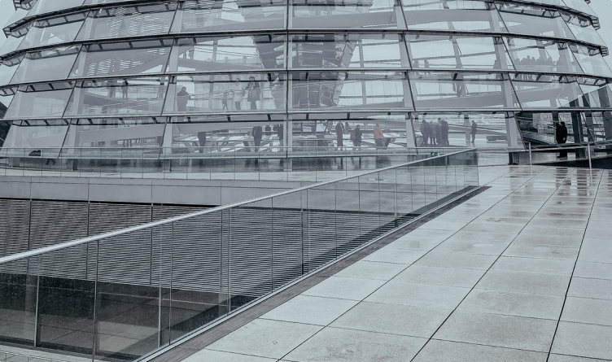
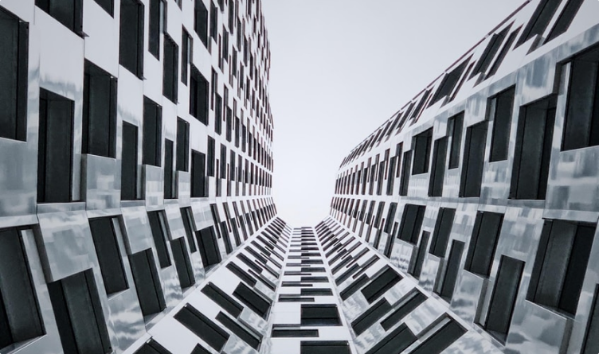

Авиабилеты
Авиабилеты Отели
Отели Туры
Туры Ж/Д
Ж/Д Авто
Авто Бонусы
Бонусы Спецпроекты
Спецпроекты
Что делать с моим бронированием?
Путешествия
20 апреля 2020
Автобус BVG довезёт вас до Центрального вокзала за 25 минут. Стоимость билетов начинается от 1,70 € и зависит от выбранной категории. Также можно добраться до города на такси. Поездка на Uber до центра города обойдётся в 26–35 €.
Из аэропорта Шёнефельд легко добраться до Александерплац на поезде. Дорога займёт около 25 минут, а билет обойдётся в 3,40 €. Стоимость поездки на Uber в центр города составит от 42 до 60 €. В Берлине предлагаем остановиться в одном из следующих хостелов. Первый из них располагается ближе к аэропорту Берлин-Тегель, а второй — в центре города.
Берлин — столица Германии и очень разнообразный город, сочетающий в себе наследие важнейших исторических событий, современные веяния культуры и свободные нравы.
Одно из самых знаковых мест Берлина. Некогда рыночная площадь, во время войны она была разрушена, а после восстановлена и окружена современными постройками. Площадь венчают большие Часы мира — вращающаяся скульптура, отображающая время в разных частях мира. Недалеко от Александерплац возвышается 368-метровая Берлинская телебашня. На неё можно подняться, чтобы осмотреть город с высоты. Билет обойдётся в 16,50 €.
Одно из самых знаковых мест Берлина. Некогда рыночная площадь, во время войны она была разрушена, а после восстановлена и окружена современными постройками. Площадь венчают большие Часы мира — вращающаяся скульптура, отображающая время в разных частях мира. Недалеко от Александерплац возвышается 368-метровая Берлинская телебашня. На неё можно подняться, чтобы осмотреть город с высоты. Билет обойдётся в 16,50 €.
Перейдя по пешеходному мосту Фридрихсбрюке (Friedrichsbrücke), вы попадёте на знаменитый Музейный остров. На нём расположены исторические здания, внутри которых сейчас открыты Музей Боде, Старая национальная галерея, культовый Пергамский музейи Старый и Новый музеи. Перейдите по ссылкам, чтобы узнать о каждом из них подробнее.
Главной достопримечательностью музейного острова является символ города — Берлинский кафедральный собор. Зайдите в него, чтобы посмотреть на величественный купол и архитектуру.
Рейхстаг — здание, в котором в настоящее время заседает национальный парламент Германии. Само здание интересно большим стеклянным куполом, откуда открываются панорамные виды на Берлин. Посещение Рейхстага и его купола бесплатно, однако все посетители должны предварительно зарегистрироваться. Удобнее всего сделать это заранее онлайн.
На Парижской площади стоят Бранденбургские ворота — одна из главных достопримечательностей Берлина. С площади ворота ведут в крупнейший парк города — Большой Тиргартен. Помимо огромной зелёной территории с прудами и аллеями, которые местами напоминают лес, в нём стоит памятник Гёте, Мемориал павшим советским воинам и Колонна Победы. Если сворачивать на узкие тропинки, в парке можно найти цветники с розами, Рододендронхайн, памятник Бетховену и Берлинский зоопарк.
Недалеко от Бранденбургских ворот находится ещё одна важнейшая достопримечательность Берлина — Мемориал жертвам Холокоста. Он выстроен в форме лабиринта из колонн разной высоты, между которыми можно ходить.
Потсдам — небольшой городок недалеко от Берлина, известный живописными парками и изысканными дворцами. Исторический центр города представляет из себя небольшие здания и мощёные улицы, а также имеет собственные Бранденбургские ворота.
Как добраться: удобнее всего доехать до Потсдама на поезде, который отходит от Центрального вокзала Берлина и идёт 25 минут. Билет обойдётся в 3,40 €.
Прибыв в город, отправляйтесь в парк Сан-Суси — обширную территорию с дворцом, садами и примечательными павильонами, некогда служившими летней резиденцией Фридриха Великого. Вход в парк свободный.
Как добраться: от вокзала Потсдама до парка можно прогуляться через центр города в течение 40 минут (около 3,2 километров) или доехать на трамвае за 5 минут — стоимость билета составит 1,50 €.